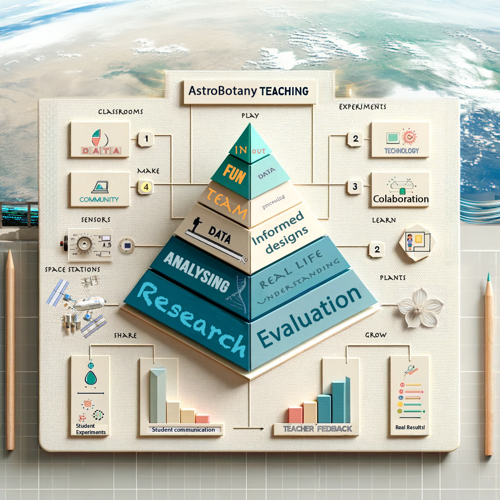

AIRI: Astrobotany International Research Initiative Program Summary and cover page
AIRI: Astrobotany International Research Initiative
Program I: Microgreens in Microgravity
.png)
Research Guide
Authors
Gilbert Cauthorn, MSc, Sophia Griffith, Rachel Wang, and Dr. Richard Barker.
SKG Astrobotany Research and Education Program, Osaka, Japan
Gilroy Lab, University of Wisconsin Madison, USA
Reviewers
Dr Christina Johnson, Lori Waters, MSc, Emily Helton, Joshua Revels
UW-Madison, ARC, KSC, and the JSC Education Resource Center
AstroBotany Educational Ethos, tools and techniques
The goal of the AIRI program is to create a collaborative international environment in which students, educators, researchers, and citizen scientists are able to contribute to astrobotany research in future space missions. We aim to share methods and data openly to help students and researchers around the world learn from each other's experiences while using the AIRI project-based learning program. It doesn’t matter if you are a professor lecturing in higher education or an informal citizen scientist with a passion for plants or space. We believe in equity in education, so we’ve added tables showing how AIRI can help teachers create authentic project-based research experiences that achieve next-generation science standards.
The AIRI program aims to be holistic and inclusive of all people. We are brand agnostic but will recommend specific tools that have enabled successful experiments previously. For example, Epicollect5 is a citizen science data harvesting tool where people around the world share data. There are other data-sharing mechanisms. However, this one has an open-source data application programming interface (API) that makes it quicker and easier to share data.
Our goal is to empower citizen scientists to develop novel urban agricultural innovations as part of a new greener revolution on this planet and others. Equity lies at the roots of education.

Having fun with AI is part of the course.
Figure 1: Education is often considered to be a pyramid scheme, but with an open framework and the embracement of the role of the arts in science communication we can build a more inclusive research community.
"Kids in Data" Space Invaders Game: A Fun Step Towards Data Literacy
Participants are encouraged to discuss online data sharing and the creation of online avatars. Researchers need to be aware of their digital footprints and the associated risks and opportunities. These concepts are approached through partaking in a Space Invaders computer game league where the results from previous participants can be viewed using interactive relational databases provided by Qlik and the Kids in Data literacy program.
What's Your Favorite Microgreen?
Help us find out what the world's favorite microgreen is. Do you use data to inform your decision? Everyone is different, so let's explore the collective answer and the reasons behind it. Does your choice relate to your age, location, or something else? To share your insights with the Astrobotany Research Community, please participate in our platform to share your thoughts on microgreens with the Astrobotany research community. Your input is crucial! The key question we aim to answer is related to your preference: does it depend on age, location, or other factors? Do you rely on data to make your choice or is it just your taste buds or gut that makes the decision? Help us use nutritional and yield data while we discover the world's most popular microgreen we also created a USDA microgreen meta-data application to help provide you with experimental data as you select your favorite microgreen variety.
.png)
Program Stage III Summary: Growth of Microgreens in Terrestrial Environments
In this stage, participants will grow microgreens in the soil in order to collect quantitative and qualitative data on growth patterns. Participants may choose to extend this investigation by comparing selected crops grown hydroponically using a Hamama kit or their own DIY protocol. There are multiple variations possible, such as growth in varied nutrient media, as well as variations in light quality or quantity. It is important to isolate 1 or 2 factors of choice for analysis and record your methods in your science journal to ensure they are reproducible. We recommend using your smartphone to save the primary data, such as photos or numbers using this EpiCollect5 AIRI MicroGreen Easy Leaf Area to help you organize your data collection so it can be shared with other researchers. The introduction to the image analysis component requires the researcher to have access to a digital camera or smart device. There are many software tools that analyze images available on laptops or desktop computers. First, we’ll introduce the Easy Leaf Area software, which can be accessed on Android phones or PCs running Windows, iOS, or Linux. Visit the software's GitHub page to download.
.png)
 (1) (1).png)
Figure 5: Example analysis showing photos taken each day for 6 days starting just before sample harvest and consumption began. Photography was also performed of the subsequent nutritional enhancements of mealtime (see Twitter and Instagram for microgreen-enhanced mealtime). Source: Dr. Richard Barker, unpublished citizen science demo data.
Microgreen Development and Gravitropic Response
Software options for this project can help you collect important meta-data, and primary imaging data, and optimize your experimental parameters to ensure your data is comparable and shareable with the research community. Quantitative data will be collected through root mapping using Fiji, SmartRoot, and AstroDart, along with Urban microgreen EpiCollect5.
This stage will focus on growing microgreens on plant-based agar or wet filter paper to observe and measure root growth kinetics. After recording initial root growth at three-time points (e.g., days 3, 4, and 5 post-germination), the gravity vector will be rotated 90 degrees to observe root adaptation to this stimulus.
 (1) (1).png)
Figure 6: (A) Root length measurements. (B) Hypocotyl measurements. (C) Direction of root or shoot growth for 4 ecotypes of Arabidopsis thaliana (Col-0, WS, Ler, Cvi) displayed as nightingale plots with a bin size of 10. (D) Scatter plot showing the gravitropic reorientation, error bars show the standard error. (E) ANOVA statistics are used to show differences based on variety and time points. (F) Example photography of Mizuna (or other microgreens) at 3 developmental stages that can be used to generate data like these. Source: Dr. Richard Barker, unpublished citizen science demo data.
Turning Microgreens into Stem Cell Cultures and Taking Cuttings or Making Plant Clones
One of the greatest tools a researcher has is the strength to ask a well-structured question, ResearchGate is an excellent social media platform for this. This is real research so remember to write down your thoughts, and record the volumes you use and the material you need for your experiments. We recommend using the text document or spreadsheet “science journal” as a digital notebook, as it allows you to quickly link notes and sensor measurements to photos and timestamps. When laboratory protocols become more advanced, such as investigations into genes and genomes, the ability to save, store, and visualize DNA sequences becomes essential. We recommend the Benchling software as it provides these slightly more advanced molecular biology features and it is nice to keep all protocols in one place. This is an example protocol from a scientist who turns Arabidopsis seedlings into stem cell cultures. Germinate your seeds on a medium that contains the correct concentration of auxin (2,4-D). Paul et al. (2002) created a callus induction medium using the following recipe (Sterile conditions are essential for this to work). You can adapt this protocol for microgreen species.
.png)
(A) Cell cultures can be grown from any plant and plants can be generated from cell cultures
 (1).png)
(B) The cell cultures can acquire a range of characteristics depending on the genome they have, the organ they came from and the stimuli they receive.
Figure 7: (A) Cell cultures can be grown from any plant and plants can be generated from cell cultures. (B) The cell cultures can acquire a range of characteristics depending on the genome they have, the organ they came from and the stimuli they receive.
Modeling auxin transport and movement
Understanding how auxin affects plants at a cellular level is difficult and requires computers to model and run simulations. These computer programs are designed to use mathematical models to describe the physical and mechanical characteristics of how cells function. These models can be used to investigate how chemicals might move across membranes to form concentration gradients. This movement is often coordinated by special proteins that reside in cell membranes and are responsible for transporting important signaling hormones. Some transporters are influenced by environmental factors such as light and gravity. The SimuPlant modeling software allows you to explore this fundamental biology at a cellular and molecular scale. Read a summary of the model here and download the SimuPlant modeling software.
.png)
Figure 8: (A) Cellular model showing the subcellular location of auxin transport and signaling components. (B) Root tip model illustrating auxin levels predicted by the reverse fountain model of auxin movement in the root and lateral apices. Here’s a link to a video of the model in action.
Phototropic Response of Microgreens Grown in Simulated Microgravity
- The most advanced stage of AIRI focuses on the effects that simulated microgravity has on the development of microgreens. This will be achieved through the utilization of the CoSE Gravity Chamber (or any DIY 2D slow-rotating clinostat you may have).
- More information on 3D clinostats can be found at CoSEcloud.com.
- More information on how to build your own DIY 2D clinostat found at Dr. Andrea Henle's SpaceBiology website..
- Qualitative and quantitative data will be collected and analyzed through the utilization of Easy Leaf Area, RootNav 2.0, SmartRoot, and AstroDart software.
.png)
Source: Collaborative Science Environment for the 3D clinostat rendering and photo of the germinating seeds inside it.
Figure 9: Special 3D clinostats and random positioning machines can create simulated microgravity. This CoSE Scispinner max can also produce a directional phototropic stimulus.